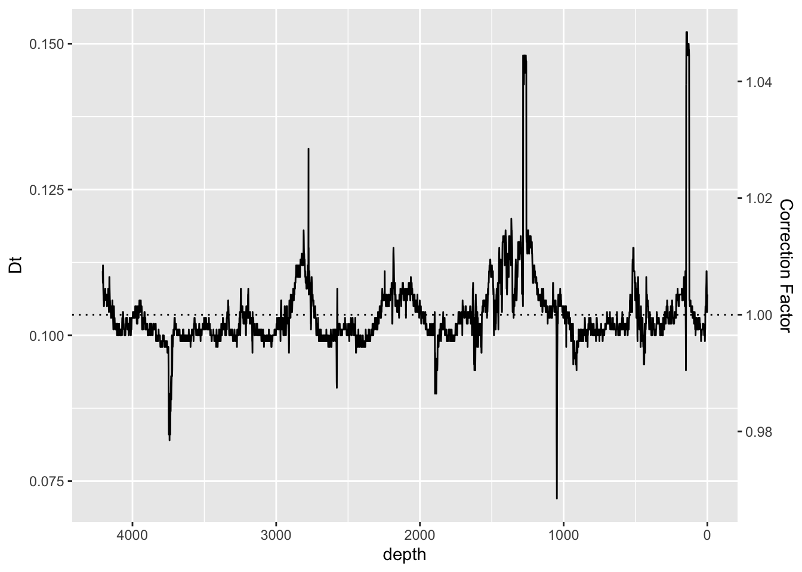

3.6 Dead Time
In silicone drift ED-XRF detectors the electronics are only so fast. This limits the flux of photons into the detector that can be measured. When the count rate is high, the detector will not be making observations whilst the electronics “catch-up”; this is the dead-time, and here it is expressed as a fraction of the overall dwell time. When the system is optimised variations in dead-time are usually small enough to be ignored, but where the matrix or configuration leads to large variations in dead-time they should be corrected for.
ggplot(data = CD166_19_xrf, aes(x = depth, y = Dt)) +
scale_x_reverse() +
scale_y_continuous(sec.axis = sec_axis( trans=~(.+(1-mean(CD166_19_xrf$Dt, na.rm = TRUE))), name="Correction Factor")) +
geom_line() +
geom_hline(yintercept = mean(CD166_19_xrf$Dt, na.rm = TRUE), linetype = "dotted")
CD166_19_xrf %>%
mutate(newDt = Dt+(1-mean(CD166_19_xrf$Dt, na.rm = TRUE))) %>%
mutate(across(any_of(elementsList)) * newDt) %>%
select(-newDt) %>%
head()## # A tibble: 6 × 57
## depth MSE cps validity Al Si P S Cl Ar K Ca
## <dbl> <dbl> <dbl> <lgl> <dbl> <dbl> <dbl> <dbl> <dbl> <dbl> <dbl> <dbl>
## 1 0 1.26 22415 TRUE 41.1 178. 0 0 729. 699. 1417. 60173.
## 2 1 1.41 34525 TRUE 76.2 276. 0 10.0 1321. 605. 2571. 113013.
## 3 2 1.57 38370 TRUE 57.0 306. 0 0 1514. 595. 2629. 144356.
## 4 3 1.55 39796 TRUE 74.0 330. 0 32.0 1471. 506. 2379. 163016.
## 5 4 1.41 40022 TRUE 26.1 207. 0 21.1 1318. 557. 2275. 153880.
## 6 5 1.41 41973 TRUE 53.4 235. 0 37.3 1753. 595. 2969. 136895.
## # … with 45 more variables: Sc <dbl>, Ti <dbl>, V <dbl>, Cr <dbl>, Mn <dbl>,
## # Fe <dbl>, Ni <dbl>, Cu <dbl>, Zn <dbl>, Ga <dbl>, Ge <dbl>, Br <dbl>,
## # Rb <dbl>, Sr <dbl>, Y <dbl>, Zr <dbl>, Pd <dbl>, Cd <dbl>, I <dbl>,
## # Cs <dbl>, Ba <dbl>, Nd <dbl>, Sm <dbl>, Yb <dbl>, Ta <dbl>, W <dbl>,
## # Pb <dbl>, Bi <dbl>, `Mo inc` <dbl>, `Mo coh` <dbl>, filename <chr>,
## # position <dbl>, `sample surface` <dbl>, `E-gain` <dbl>, `E-offset` <dbl>,
## # `F-slope` <dbl>, `F-offset` <dbl>, `Fe a*2` <dbl>, `Fe a+b` <dbl>, …